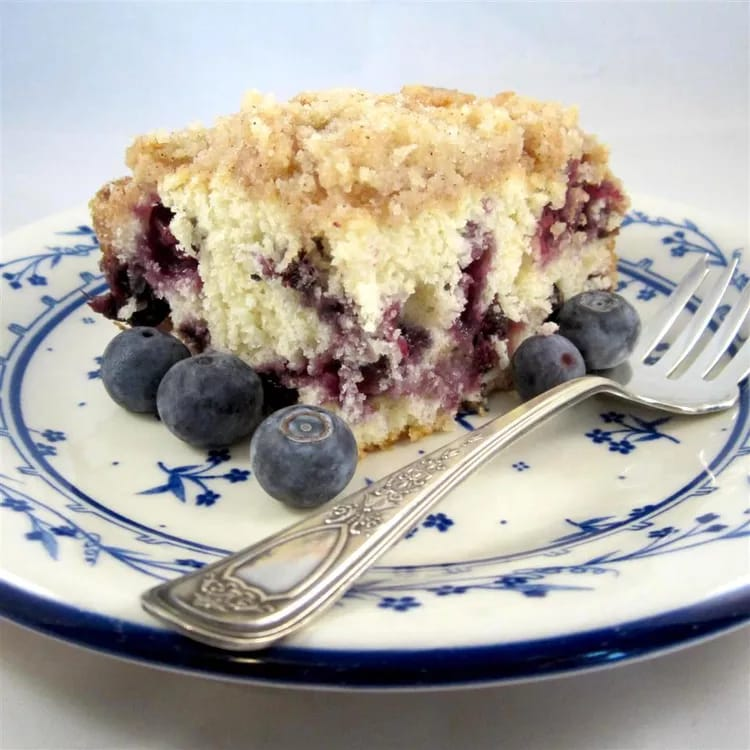

Blueberry Buckle

Description
Classic blueberry buckle recipe
Ingredients
Buckle
- 1 ½ cups white sugar
- ½ cup butter, softened
- 2 large eggs
- 4 cups all-purpose flour
- 4 tablespoons baking powder
- ½ teaspoon salt
- 1 cup milk
- 4 cups fresh blueberries
Topping
- 1 ⅓ cups white sugar
- 1 cut all-purpose floor
- 1 tablespoon ground cinnamon
- ⅔ cup cold butter, cut into cubes
Steps
- Preheat the oven to 375 degrees F (190 degrees C). Grease a 9x13-inch baking dish
- Prepare buckle: Beat together sugar and butter in a large bowl using an electric mixer until creamy and smooth. Add eggs one at a time, mixing well after each addition. Whisk together flour, baking powder, and salt in a separate bowl; stir into creamed butter mixture, alternating with milk, until just combined. Fold in blueberries. Pour batter into the prepared dish
- Prepare topping: Combine sugar, flour, and cinnamon in a medium bowl. Cut in cold butter using a pastry blender or 2 knives until crumbly. Sprinkle topping over batter.
- Bake in the preheated oven until a toothpick inserted into the center comes out clean, 40 to 45 minutes. Cool on a wire rack